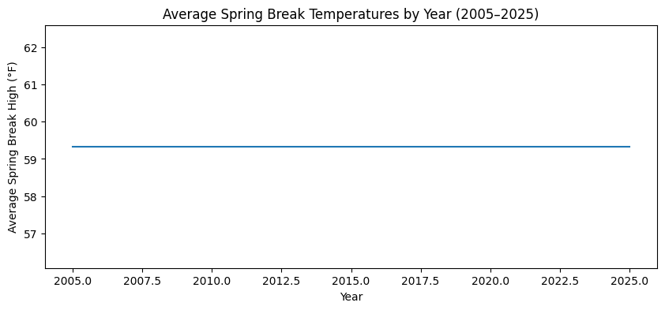

Should You Actually Stay in Philly for Spring Break?
Every March, we, the students of UPenn, face the same question: do we escape Philly for Spring Break, or just stick it out? Flights are expensive, beaches are crowded, and sometimes it’s actually not that bad at home.
But is that really? Is it not too bad or are we just lying to ourselves? Theres one way to know!
To find out, I looked at 21 years of weather data (2005–2025) from Philadelphia and asked a simple question:
What is Spring Break generally like here?
WILL IT BE?
Gorgeous Spring
OR ALTERNATIVELY STILL?
Painfully cold
import pandas as pdimport matplotlib.pyplot as pltdf = pd.read_csv("philadelphia_weather_2005_to_2025.csv")df["date"] = pd.to_datetime(df["date"])df.head()
date
day
year
high
low
rain
snow
day_num
month_num
dow
dow_name
month
0
2005-01-01
January 1
2005
50
39
0.00
0.0
1
1
5
Saturday
January
1
2005-01-02
January 2
2005
43
35
0.00
0.0
2
1
6
Sunday
January
2
2005-01-03
January 3
2005
36
30
0.01
0.1
3
1
0
Monday
January
3
2005-01-04
January 4
2005
32
27
0.00
0.0
4
1
1
Tuesday
January
4
2005-01-05
January 5
2005
32
22
0.00
0.0
5
1
2
Wednesday
January
df.shape
(7665, 12)
Thats 7665 days! We’ve got a lot of data to work with and learn from but what exactly are we looking for?
Spring Break!
So let’s look at 7-15th March for these past years.
Perfect! We’ve now only filtered for our desired dates from the entire dataset. This makes finding patterns we actually care about much easier. Lets see how that has changed our data
spring_break.shape
(189, 12)
In the past 21 years, we have 189 days of weather to inform us about what this year is going to look like. Lets quickly answer some questions.
What is the coldest it has been and when?
What is the warmest it has been and when?
How often has it rained? and How much?
How often has it snowed? and How much?
coldest_day = spring_break.loc[spring_break["low"].idxmin(),'date']warmest_day = spring_break.loc[spring_break["high"].idxmax(),'date']rainy_days = spring_break[spring_break["rain"] >0].shape[0]amount_of_rain = spring_break['rain'].sum()amount_of_snow = spring_break['snow'].sum()print(f'The coldest day in the past springs was {coldest_day}')print(f'The warmest day in the past springs was {warmest_day}')print(f'It has rained {rainy_days} in past spring breaks for a total of {amount_of_rain} inches')print(f'It has snowed for a total of {amount_of_snow} inches')
The coldest day in the past springs was 2005-03-09 00:00:00
The warmest day in the past springs was 2005-03-10 00:00:00
It has rained 0 in past spring breaks for a total of 0.0 inches
It has snowed for a total of 0.0 inches
What is the coldest it has been and when? 9th March, 2005 30 degrees
What is the warmest it has been and when? 10th March, 2005 68 degrees
How often has it rained? and How much? It has never rained, how crazy is that!
How often has it snowed? and How much? Never snowed
Lets now figure out how warm/cold it might be nonetheless on average!
Its also worthwhile to understand how temperatures are progress over the years instead of treating it as a 20 year block. Oftentimes, due to phenomena like global warming, temperatures increase over time. Let’s see if thats the case for Philadelphia over the past few years.
yearly_avg = spring_break.groupby("year")["high"].mean()plt.figure(figsize=(10,4))plt.plot(yearly_avg.index, yearly_avg.values)plt.xlabel("Year")plt.ylabel("Average Spring Break High (°F)")plt.title("Average Spring Break Temperatures by Year (2005–2025)")plt.show()

Evidently, temperatures during the spring break in Philly have almost not moved which seems slightly crazy but the data is clear. This seems unhelpful but rather tells us that we are likely to see a pattern repeat this year, where the average spring break high temperature will be around 59.33 degrees.